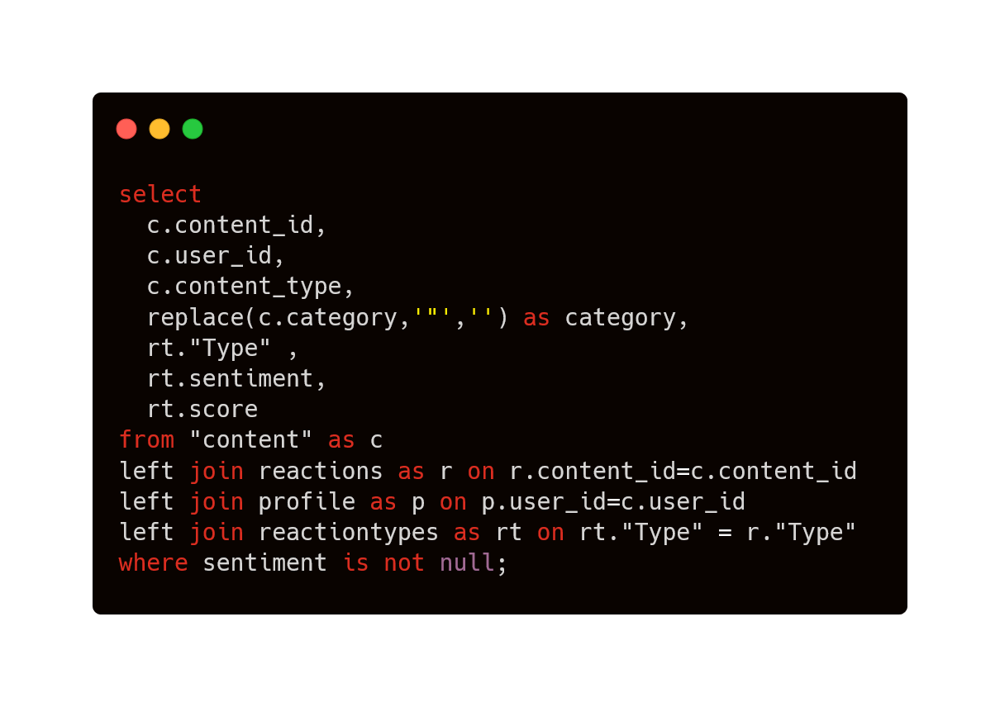

Accenture Data Analytics Virtual Experience
1. Project understanding
Client: Social Buzz
Client industry Social media & contet creation
- Which statement best describes the business problem that Accenture is tasked to address for this project?
The client has reached a massive scale within recent years and does not have the resources internally to handle it.
Which statement lists the three requirements that Accenture is tasked to fulfill for this project?
Audit of big data practice, recommendations for IPO, analysis of popular content.Which task out of these options is the most relevant to you as a data analyst, and therefore which one will you work on?
Analysis of sample data sets with visualizations.
2. Data cleaning & modeling
Requirements gathering
7 available CSV files
Main task: Analyze content categories that highlights the top5 categories with the largest aggregate popularity.
4 selected CSV files: Content, Profile, Reactions, ReactionType.
Data cleaning & Data modeling
Used PostgreSQL to assess the data quality and make modified csv file.
FEEDBACK of data quality to client:
- the users who're under 10 years old occupy 23.3%, which is unresonable.
- 3.9% of records miss the value of Type, sentiment, score.

(After the communication with client, move forward to the next step.) In this condition, I deleted those balnk records and column age.
3. Data visualization & storytelling
Used Power BI to create dashboard.
Top 5 categories:

4. present to the client
Created slides to present my results.